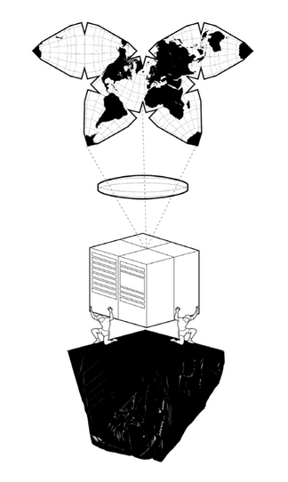

Book Review: Atlas of AI
Review of: Kate Crawford, Atlas of AI (New Haven: Yale University Press, 2021).
Atlas of AI is a timely book by Kate Crawford covering the various implications of AI today and throughout history. There is intense public scrutiny on the issues covered in this book: labour, energy consumption, climate change, discrimination, privacy, and government accountability. However, these concerns are often overshadowed by the general enamourment with technological artifacts like Amazon Alexa, Google Nest, Tesla, and mobile devices. This book situates AI in the physical and social world. Crawford shows us the ways that AI exploits and changes our relationships with the Earth and with each other.
Crawford covers many of the canonical examples and issues flowing from AI. You will see many of the examples from this book also referenced in any current writing that views the field through a legal, social, or political lens. The latter chapters are an especially good presentation of AI as a tool of state power. While I found this to be a valuable, scope-defining work for people newly thinking about the consequences of AI use and development, I did find portions of it repetitive, vague, or not well-connected to a central thesis. These are easy enough to avoid or skim over.
Summary
This book opens with an image of two people holding up what appears to be a mainframe computer on their shoulders, themselves crouched on top of a fragment of the Earth. The computer is projecting, through a lens, a distorted image of the Earth’s surface. That projection sits above the scene.

This image neatly captures the themes in this book. AI exploits human labour and resources extracted from the Earth. The conception of AI as disembodied, while sometimes a helpful abstraction—and highlights one way in which AI might never be Really Intelligent—serves to obscure the material needs and effects of AI. This is the central theme of the first two chapters, “Earth” and “Labor.” The middle of the book focuses on the computer science of AI and machine learning. AI, especially machine learning, transforms data through its operation. It creates projections of reality into digital representations. These are necessarily an approximation, with the goal that the representation preserves features that are useful for the intended task. In the image above, this approximation appears as a butterfly map, a projection that presents more accurately the distances between locations in northern latitudes. The projection exaggerates the distance and introduces stark discontinuities between land masses in the southern hemisphere. Of course all map projections onto a flat surface must make tradeoffs, but Crawford’s selection of this particular projection reflects a theme developed in the latter portions of this book: “jingoistic idea of sovereign AI” and ethics frameworks that are “overwhelmingly produced by economically developed countries, with little representation from Africa, South and Central America, or Central Asia.”
Earth
The first chapter highlights the physical damage to the Earth when we extract the materials needed for our technology: e.g. lithium mines in Nevada, rare earth elements often located in emerging markets and conflict zones, and latex needed for transatlantic cables that is extracted from a species of tree in Southest Asia. That is just some of what is required to create our physical technological tools. Crawford also highlights the ongoing energy needs to use these tools. Training very large deep neural networks is a prominent example.
Labor
The chapter on Labor shows us how human labour is both controlled by AI and exploited in the development of AI. AI is used to monitor, track, and predict demand and capacity. It is used to make hiring decisions. AI also relies on labour-intensive, crowdsourced, manual labelling of data that is needed for its training data. Crawford reviews Amazon’s Mechanical Turk and Google’s reCAPTCHA technologies.
Data and Classification
I have grouped these chapters together in this review because they encompass the general focus of current-day research into AI fairness and they can’t be considered separate from each other. These two chapters are a highlight of the book for me. One of my only criticisms of these chapters is how much of each might possibly have been also discussed in the other chapter.
The chapter on data is the most coherent in the entire book, with a great collection of on-point examples. It does slightly underplay the current awareness of dataset issues, though. The data chapter has a good discussion of privacy and ownership issues and the practice of using public data to create private models.
The classification chapter highlights the circularity and cycle of feedback between data generation, training, classification, and back to data generation. Classification risks replicating in the future the biases exhibited in the past and this is tied up both with the data used to train an AI and the systems surrounding an AI.
Making these choices about which information feeds AI systems to produce new classifications is a powerful moment of decision making: but who gets to choose and on what basis? The problem for computer science is that justice in AI systems will never be something that can be coded or computed. It requires a shift to assessing systems beyond optimization metrics and statistical parity and an understanding of where the frameworks of mathematics and engineering are causing the problems. This also means understanding how AI systems interact with data, workers, the environment, and the individuals whose lives will be affected by its use and deciding where AI should not be used.
Affect
This chapter is a focused critique on a particular application of AI: affect (roughly, emotion) recognition. It echoes Crawford’s critique from AI Now’s 2019 Report and elsewhere. It points out the dubious foundations underlying these attempts at classifying people’s emotional state based on their facial expressions. This is another good chapter in terms of coherence and writing style. I would not be surprised if it had existed as a standalone piece before being used in this book.
State
While state use of AI was discussed tangentially throughout the book (COMPAS, law enforcement generally, border crossings, mug shot analysis), this chapter is ostensibly focused on state intelligence, surveillance, and decision-making. However, it unavoidably weaves together a story that includes private research (e.g. Google, Microsoft) and decision-making spanning NSA intelligence gathering to apps like “Neighbors, Citizen, and Nextdoor.” Crawford discusses the Snowden documents, the goal of militaries around the world to gain the AI edge, and enlistment of private corporations in these efforts. The enamourment with AI surveillance and decision-making has also worked its way down to local police forces, municipalities, and administrative bodies. Crawford presents a commonly referenced example of government decision-making gone wrong: a system used in Michigan to attempt identify unemployment-insurance fraud. It “inaccurately identified more than forty thousand Michigan residents of suspected fraud.”
Power
This chapter is the book’s conclusion but it presents a new idea, too: enchanted determinism. This is the paradoxical idea that AI systems are both “enchanted” in that they can do what we haven’t told them to do, but also deterministic enough to be safe and ethical for deployment in high-stakes decision-making. I have also argued that you can’t have it both ways, especially when we expect a decision-maker to act with discretion. An algorithm will either be following deterministic instructions, which is a fettering of discretion, or it will incorporate randomness, and that also isn’t what we expect from discretion.
I like Crawford’s reminder that we must attend to the committments we are making as we develop and deploy AI system in private and through the state.
Critiques
“AI is neither artificial nor intelligent.” This is a nice pithy point, but I don’t think it is one that anyone disagrees with, at least with the sense that Crawford sets up through contrast in the following sentence. While some people have optimism that we might someday create real intelligence, many people doubt that this is possible, and nobody today suggests that we have done so. This is why it is called artificial intelligence. The term artificial is used not to imply that there are no real artifacts or effects of AI, but merely to indicate that they are not truly intelligent. They are artifices of intelligence. They are also “artificial” in another sense: that they are created by us, rather than occuring naturally. I think this is wholly consistent with the point that Crawford is trying to make with this aphorism but without the need for Crawford’s linguistic attack on the term itself.
In the Earth chapter, Crawford cites the work of Emma Strubell et al. for the proposition that “running only a single NLP model produced more than 660,000 pounds of carbon dioxide emissions.” Strubell et al. were reporting the cost to train such a network. It is now well-recognized that training large neural networks has a large cost to our environment, but also that the cost of running them at inference time is not nearly costly.
I found the continued reference to logics to be unhelpfully vague. Crawford often does not elaborate on what a particular logic actually entails. It seems that logics is used variably as a synonym for “methods,” “effects,” or “values.” But the intended meaning isn’t clear and seems to shift depending on the usage.
Last, it seems like the editor may have demanded additional content to fill out some of the chapters, especially the chapter on labour. The Google TrueTime example seems shoehorned into this chapter and it is not a good fit. Google TrueTime is a distributed, consistent clock that is available on Google servers. This is presented in a chapter devoted to highlighting the ways in which AI relies on and enables exploitative labour practices. It is hard for me to see the argument that TrueTime does this. TrueTime is used to consistently create timestamps for events that occur across multiple servers and datacenters, separated by thousands of kilometres. This kind of consistency is critical to programs that deal with any sort of accounting of resources: e.g. bank accounts, selling concert tickets. Many people might be attempting to interact with such a system simultaneously through separate servers and there has to be a way for those separate servers to determine which interaction happened first. Otherwise, two people might be sold the same final ticket to a concert. Crawford fails to connect this technological example to the thesis developed in this chapter: that AI serves the goals of controlling “bodies in space and time” and of “controlling the political order.” Other examples that Crawford provides are compelling; this one is not.
Again, these are minor points that can be skimmed past or set aside while you read this work. The bigger picture is worth seeing.
Conclusion
For a general audience unversed on the full scope of the use and development of AI, this is a helpful book. Much of the material transfers to concerns with other large-scale technology: batteries, blockchain, digital currency, NFTs. And AI as a tool of state power will need public regulation.
Notes
1. ↑ Kate Crawford, Atlas of AI (New Haven: Yale University Press, 2021) at 208.
2. ↑ Ibid at 224.
3. ↑ See e.g. the NeurIPS 2021 Paper Checklist which asks authors to report on the copyright, licence, and consent relating to the creation of the dataset(s) that are used.
4. ↑ Crawford, supra note 1 at 147–78.
5. ↑ Ibid at 206.
6. ↑ Ibid at 8.
7. ↑ The quote goes on: “Rather, artificial intelligence is both embodied and material, made from natural resources, fuel, human labour...”
8. ↑ Crawford, supra note 1 at 42, citing Emma Strubell, Anaya Ganesh & Andrew McCallum, “Energy and Policy Considerations for Deep Learning in NLP” (2019) arXiv.org.
9. ↑ See e.g. Tom B Brown et al, “Language Models are Few-Shot Learners” (2020) arXiv.org, s 6.3 (Energy usage).
10. ↑ E.g. “the logics of capital, policing, and militarization”; “the logics of extraction, a constant drawdown of minerals, water and fossil fuels”; “Logics of efficiency, surveillance, and automation”; “the response is to accept regulation at the margins but to leave untouched the underlying logics of production”; “new logics of information at a planetary level”; “cross-breeding corporate and state logics”; “Silicon Valley had already built and monetized the logics and infrastructures of AI.”
11. ↑ Crawford, supra note 1 at 16.
12. ↑ Ibid at 82.